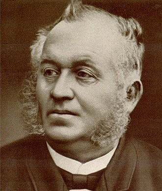

 Компания Hohner была основана в 1857 году в Германии часовщиком Маттиас Хонер. Губные гармошки стали первым выпускаемым продуктом компании. Сначала они делались только вручную. С помощью своей семьи и наемных рабочих, Маттиас Хоннер был способен производить до 650 инструментов в год, спустя некоторое время, он разработал и наладил их массовое производство. До сих пор губные гармошки Hohner считаются одними из лучших в мире. Дальше в производство пошли аккордеоны, еще позже гитары, басгитары, мелодики. Кстати, мелодика – это изобретение Hohner, у этого уникального инструмент клавиатура как у фортепиано, но звук извлекается путем вдувания воздуха, как на духовых инструментах. Она даже использовалась в записи альбома «Spinout» Элвиса Прэсли .
В настоящее время компания Hohner - это крупнейший производитель музыкальных инструментов. Hohner – это знак качества, гордость Германии, более чем 150 летние традиции. Почти каждый инструмент Hohner содержит ноу-хау инженеров компании. Компания плотно сотрудничает с лучшими музыкантами для улучшения качества звука, для того, чтобы инструмент помогал музыканту передать его чуства, отвечал техническим потребностям. Инструменты Hohner продаются более, чем в 80 странах. Около 600 сотрудников трудятся для достижения максимально позитивного результата. В производстве Hohner используются передовые технологии, самые современные и высокоточные инструменты. В изготовлении инструментов используются самые лучшие материалы, прошедшие качественную обработку. К тому же Hohner отличается доступностью цен. Сейчас уже трудно представить какой-либо магазин без продукции Hohner.